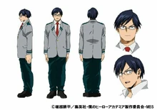

Тенья Иида
Тенья Иида
- Пол: ♂ Мужской
- Рост: 179 см.
- Возраст: 16
- Группа крови: A
- Родился в: Японии
Тенья Иида, также известный, как Тенья или Ингениум — ученик и староста Класса 1-A академии Юэй. Тренируется, чтобы стать профессиональным героем.
Я просто любитель! Я даже... и близко стоять с ними не могу! Тем не менее... Если я не встану, здесь и сейчас, тогда снова! В очередной раз эти ребята обставят меня... и мне будет не угнаться за братом... и я не смогу догнать их!
Внешность
Тенья — молодой человек среднего роста с мускулистым телосложением. У него темно-синие волосы и он носит прямоугольные очки с половинной оправой. Его глаза также несколько прямоугольные, как его челюсть.

Геройский костюм Теньи состоит из чёрного цельного костюма с высоким воротником, над которым он носит различные части брони, в том числе шлем, который покрывает всю голову, металлический воротник вокруг его шеи, нагрудник, декоративные глушители, выходящие назад из области его диафрагмы, и металлические наручи, расширяющиеся до локтей. Костюм включает в себя специальные металлические сапоги до колен, которые специализируются на его Причуде.
Личность
Он может выглядеть суровым, но на самом деле он очень честный, решительный, старательный, интеллигентный и серьёзный человек. Он склонен принимать всё очень серьёзно. Из-за этого он имеет привычку делать поспешные выводы, а затем с энтузиазмом говорить или действовать на основе этих выводов. Например, после своего предположения о том, что Изуку выяснил истинную природу вступительных экзаменов, Тенья признал его как достойного партнёра и с тех пор сильно уважает.
Он также очень скромен, готов признавать свои ошибки и стремится улучшить себя. Это стало ясно после того, как Тенья признался, что искать мести Пятну — это не поступок настоящего героя, и решил оставить свою левую руку невылеченной как напоминание о своей ошибке и для мотивации достижения истинного героизма.
Тенья ценит благородство и игру по-честному, он согласился использовать вспомогательные устройства, которые Мэй предоставила им на время матча в Спортивном Фестивале, чтобы они могли на равных сражаться. Он не любит, когда им манипулируют, и был возмущён, что Мэй использовала его для рекламирования своих гаджетов во время матча.
Тенья восхищается своим старшим братом, Тенсеем (также известным, как Турбо Герой Ингениум), и хочет быть таким, как он. Его связь с братом настолько сильна, что после того, как Тенсей был тяжело ранен Пятном, Тенья стремился отомстить за своего брата, избавившись от него самостоятельно.
Во время тренировок Иида склонен переигрывать, стараясь полностью вжиться в роль, неважно, будь он героем или злодеем. Так, например, во время Арки Совместной Тренировки 1-А и 1-В он на полном серьёзе выкрикивал проклятия своим оппонентам-"злодеям" из 1-В и бросался типичными геройскими фразочками. А во время первой тренировки 1-А класса он пародировал злодейские позы и фразы, чем сильно насмешил Урараку Очако.
Причуда
 Двигатель: причуда Теньи проявляется в виде двигателей в икрах, дающих ему суперскорость. Его двигатели имеют несколько передач, что позволяет ему переключаться между первой, второй, или третьей передачей в зависимости от ситуации. Так же, как и реальный двигатель, его Причуда требует, чтобы выхлопные трубы на икрах оставались чистыми, чтобы нормально функционировать.
Двигатель: причуда Теньи проявляется в виде двигателей в икрах, дающих ему суперскорость. Его двигатели имеют несколько передач, что позволяет ему переключаться между первой, второй, или третьей передачей в зависимости от ситуации. Так же, как и реальный двигатель, его Причуда требует, чтобы выхлопные трубы на икрах оставались чистыми, чтобы нормально функционировать.